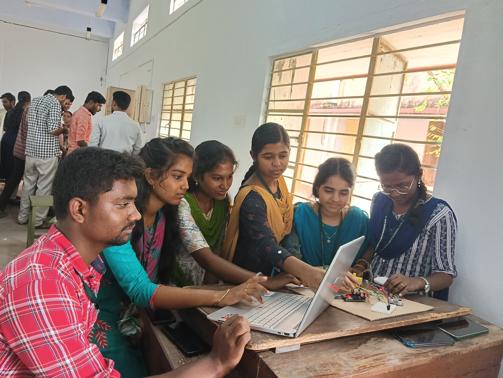
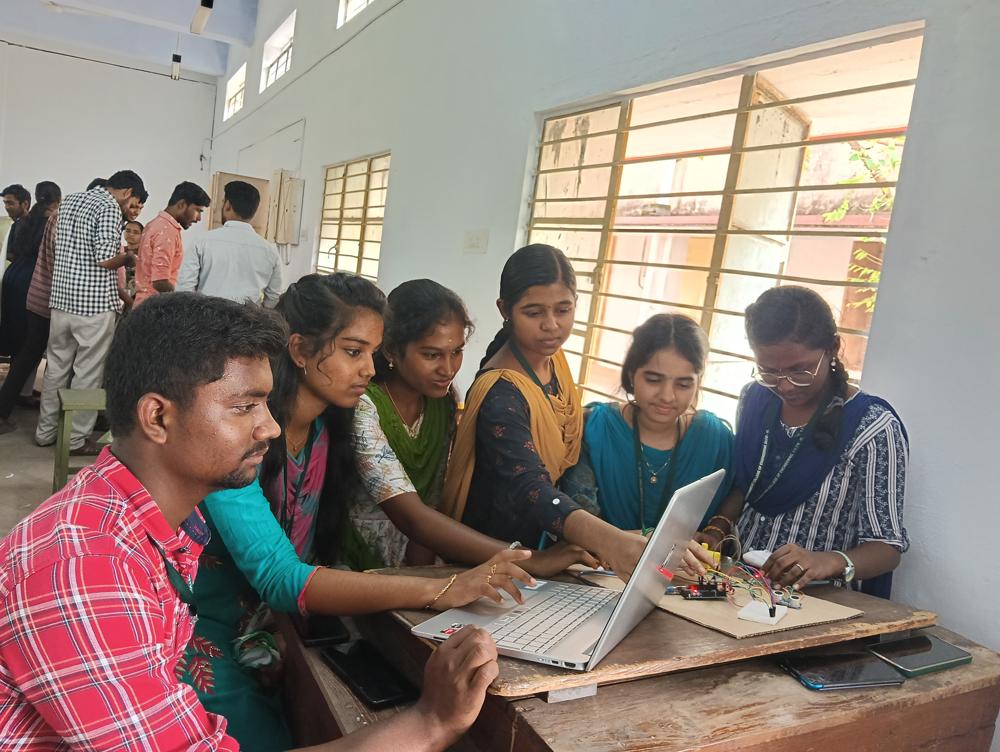

Portable Glaucoma Monitoring Device
I' ve Participated in ideation Sprint and did my project on Eye pressure monitor.
 

My Innovation: A Portable Glaucoma Monitoring Device Solution Concept: Glaucoma is a major cause of blindness globally, and controlling intraocular pressure (IOP) is essential to slow the progression of the disease. Conventional techniques for measuring IOP, like Goldmann applanation tonometry, involve direct contact with the eye, require the use of topical anesthesia, and depend on trained professionals, limiting their practicality for frequent monitoring. Non-contact approaches, such as air-puff tonometry, provide a more convenient solution but are typically confined to clinical environments due to their cost and bulk. The non-contact IOP device faces several constraints and barriers. Technically, the device must ensure accuracy and reliability, minimize interference from external factors, and account for eye movement and alignment. Clinically, the device requires regulatory approvals, clinical trials, and adoption by healthcare professionals. User-related barriers include education and training, comfort and acceptance, and minimizing user error. Cost-related barriers involve reducing device cost, maintenance, and replacement costs, while ensuring cost-effectiveness compared to traditional methods. This affordable and portable device leverages readily available technology like smartphones and cameras. Enhanced Accuracy is ensure By incorporating AI and machine learning algorithms, the device aims to deliver reliable eye pressure measurements. The solution prioritizes ease of use, allowing patients to self-monitor their condition comfortably at home. The device's affordability makes glaucoma monitoring accessible to a wider range of patients. Self-monitoring allows patients to be more involved in managing their condition, reducing reliance on frequent hospital visits. Outcome of the portable, non-contact IOP device: 1. Improved glaucoma management 2.Enhanced patient compliance 3. Reduced risk of vision loss 4.Increased accessibility to IOP monitoring 5. Cost savings for patients and healthcare systems 6.Improved quality of life for glaucoma patients. I am excited to delve deeper into the development of this innovative solution. My experience in the Ideation Sprint has ignited a passion for innovation, and I am committed to contributing to the advancement of healthcare technology..